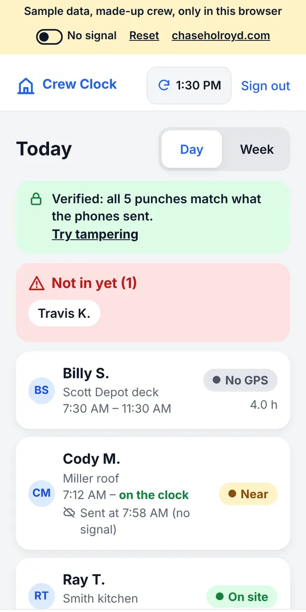

Field app · live demo
Crew Clock
A small rural crew tracked hours on paper and memory, on cheap phones with weak signal, so pay disputes came down to whose story you believed. Crew Clock makes every punch a record both sides can trust.

The problem
My dad runs a small construction crew on rural job sites, often with one bar of signal or none. Hours lived on paper and memory, so a pay dispute came down to whose story you believed. He needed to know who showed up, where and when, without tracking anyone all day.
What I built
- Three-tap clock-in on the phones the crew already owns, saved on the phone with no signal and sent later.
- A boss view: a map and a Today list of who is on the clock, plus a weekly timesheet as a CSV with names, dates, times and hours, no GPS.
- Encrypted crew chat (MLS).
How it works
The phone saves the time and location at the tap. Each phone signs every punch with a key that can't be copied off the phone and chains it to the one before, so a changed time can be caught. In the demo the boss's Today list checks every punch in the browser, and a Try tampering button shows a changed one in red.
The limit: that Verified line is demo only today. In the crew app the server checks the signatures, and showing the check on the boss's screen needs the phones' public keys there.
Product calls
- Never block a clock-in. Bad GPS or no signal means a photo or a flag for the boss, never "you can't clock in."
- A fair geofence. Phone GPS can be off by a lot in the hills, so the app counts that error in the worker's favor.
- Location only at the tap, and only with consent. No background tracking, each worker agrees once, and tests check that no other screen reads location.
Proof
- Tested40+ test files, run in CI.
- Privacy contractA written privacy contract in the repo, with consent records that are never edited.
- OpenMIT-licensed code on GitHub.
- Built to be cheapThe setup doc says every service used has a free tier that covers a beta.
Try it
Open the demo and tap Travis K. to clock in as a worker. Turn on No signal to see the offline queue, then tap Not you? and choose Sam W. to see the boss's view.
Status and what's next
The demo runs the real app on a made-up crew. The crew's own app is getting ready for a two-week beta with five workers; it has not started.
A note on the demo
The demo uses a made-up crew and job sites, and it never asks for your real location unless you turn that on. Everything stays in your browser.